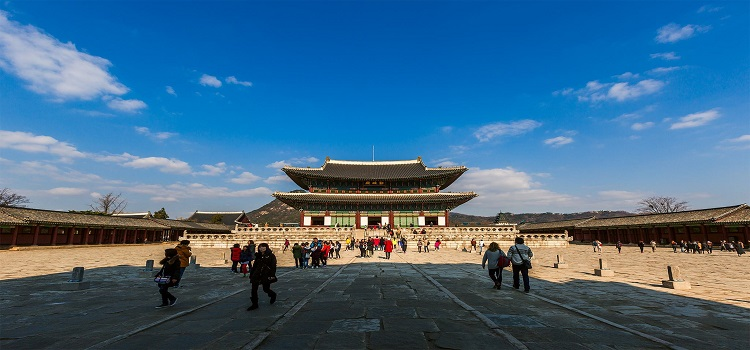

经典游
经典1日游
首尔是一个古典与现代气息并存的城市，末代皇朝—李氏皇朝的王宫、体现韩屋生活和传统文化的北村、具有现代气息的明洞以及夜景超美的首尔塔是到达首尔必须去的地方。
路线：景福宫 > 北村 > 明洞 > N首尔塔
1日游景点
#景福宫#
朝鲜半岛历史上最后一个统一王朝——朝鲜王朝（李氏朝鲜）的正宫（法宫）。位于朝鲜王朝国都汉城（今韩国首尔），又因位于城北部，故又称“北阙”，是首尔五大宫之首，朝鲜王朝前期的政治中心。
地址：首尔钟路区世宗路1-1号

图：景福宫
#北村#
因位于清溪川的上游而得名，它位于景福宫、昌德宫和宗庙之间，由北村文化中心、韩屋体验馆、嘉会博物馆和传统手工艺坊等组成，整个地区充满浓浓的历史气息。可以亲身体验地道的韩屋生活和传统文化。
地址：首尔市钟路区桂洞街37
#明洞 명동#
位于首尔中区，是韩国代表性的购物街，不仅可以购买服装、鞋类、杂货和化妆品，还有各种饮食店，同时银行和证券公司云集于此。

图：明洞街头
#N首尔塔 N Seoul Tower#
位于韩国首尔特别市龙山区南山，前称首尔塔或汉城塔，高236.7米，建于1975年，是韩国著名的观光点。
地址：首尔市龙山区龙山洞2街山1-3
图：N首尔塔
经典2日游
首尔的历史和现代气息交织，给了首尔更多的无限可能性。三清洞和清溪川能让你更好的感知韩国的文化，东大门和新罗代赋有时尚的气息，梨花女子大学是韩国首创的女子教育的学堂，夜晚去欣赏首尔的夜景。
Day1：三清洞 > 清溪川 >东大门
Day2 ：梨花女子大学> 新罗免税店 > N首尔塔
第一天景点
#三清洞 삼청동#
位于韩国首尔特别市钟路区的一个行政洞，区内依然保留着不少李氏朝鲜时期兴建的韩屋，据说其风水为首尔最佳，自古已是上流阶级居住的地方。
地址：首尔市钟路区三清路101-1
#清溪川 청계천#
是韩国首尔市中心的一条河流，全长10.84公里，总流域面积59.83平方公里，汇入中浪川后流往汉江。
地址：首尔市中区太平路1街 31
#东大门#
东大门位于首尔的市中心，原指首尔四大城门之一的兴仁之门，不过现已成为东大门服装批发市场的代名词。东大门商圈位于首尔的中心地段，从布料、成衣、嫁妆、饰品、货运行等，从头到脚所有与流行时尚相关的商品都能在这裡找到。
图：东大门
第二天景点
#梨花女子大学#
原名梨花学堂，是朝鲜高宗皇帝和明成皇后为纪念当时首先在韩国开创女子教育的循道卫理会医生Scranton的太太而命名的。1948年改名为梨花女子大学。
地址：首尔特别市西大门区大岘洞11-1号
图：梨花女子大学
#新罗免税店#
在新罗酒店旁边，规模很大，一共有四层。B1层主要是韩国本土化妆品品牌。
地址： 首尔中区东湖路249
#N首尔塔 N Seoul Tower#
前称首尔塔或汉城塔，高236.7米，建于1975年，是韩国著名的观光点。
地址：首尔市龙山区龙山洞2街山1-3
深度游
深度2日游
有人说，去一个城市首先要看的就是这个城市的文化，去到首尔，当然要看看具有韩国代表性历史的景福宫和仁寺洞，然后去看看具有现代气息的3D美术馆。第二天去看清新自然的林荫道，接着带着好心情开始购物。
Day1：景福宫> 仁寺洞 > Trickeye特丽爱3D美术馆
Day2：新沙洞 > 狎鸥亭名品街 > 乐天世界
第一天景点
#景福宫#
朝鲜半岛历史上最后一个统一王朝——朝鲜王朝（李氏朝鲜）的正宫（法宫）。位于朝鲜王朝国都汉城（今韩国首尔），又因位于城北部，故又称“北阙”，是首尔五大宫之首，朝鲜王朝前期的政治中心。
地址：首尔钟路区世宗路1-1号
图：景福宫
#仁寺洞#
仁寺洞以中央大街为中心，四周散布着很多的胡同，多而密集，就像是蜘蛛网一样。在胡同里隐藏着很多仁寺洞的著名场所。
地址：从安国洞环岛经过仁寺洞十字路口，到钟路2街塔谷公园前面的一带
#Trickeye 特丽爱3D立体美术馆#
最早于2010年12月15日在首尔麻浦区西桥洞开馆，约有100多幅作品展出，是利用错视技法通过视觉来刺激创造力与想象力的全新概念体验式美术馆。
地址：首尔特别市麻浦区弘益路3街20 （西桥洞）
第二天景点
#新沙洞#
最出名的是林荫道。新沙洞的林荫树就像名字一样清新自然，更值得一提的是她是一条美丽又实用的商业街。
地址：首爾江南區狎鷗亭路
图：新沙洞林荫路街道
#狎鸥亭名品街#
汇集了最高级的百货商店和世界名品店，国内外有名设计师们的专营店、画廊及每条胡同内的综合时尚店、一站式休闲购物等复合型购物空间。
地址：首尔江南区狎鷗亭洞
#乐天世界#
位于首尔市中心，其主题公园有惊险的娱乐设施、凉爽的溜冰场、巨大的散心湖、各种表演场、民俗博物馆等集娱乐参观为一体的娱乐场所，除了主题公园外，乐天世界还有百货商店、饭店、免税店、大型折价商场、体育中心等，它是一座名副其实的城中之城。
地址：首尔干松坡区蚕室洞40-1
图：乐天世界
深度3日游
自1394年迁都汉城之后，数百年间，汉城不仅作为都城见证了王朝的兴衰，更是用时间成就了现在的首尔。所以到了首尔一定要去看看这些具有历史意义的建筑，然后再带着好的心情去shopping。
Day1：仁寺洞> 北村韩屋村>N首尔塔
Day2：弘益大学>Trickeye 特丽爱3D美术馆 > 东大门
Day3：新沙洞>COEX MALL
第一天景点
#仁寺洞#
仁寺洞以中央大街为中心，四周散布着很多的胡同，多而密集，就像是蜘蛛网一样。在胡同里隐藏着很多仁寺洞的著名场所。
地址：从安国洞环岛经过仁寺洞十字路口，到钟路2街塔谷公园前面的一带
地址：首爾鐘路區青瓦臺路一號
#北村韩屋村#
北村韩屋村是一座韩国村庄，地处首尔钟路区，邻近景福宫、昌德宫和宗庙。该村以韩屋和传统韩国建筑风格的小屋闻明。2009年，北村韩屋村被联合国教科文组织颁发亚太区文物古蹟保护奖杰出项目奖以表扬其復修成果。
地址：首尔市钟路区桂洞街37
#N首尔塔 N Seoul Tower#
前称首尔塔或汉城塔，高236.7米，建于1975年，是韩国著名的观光点。
地址：首尔市龙山区龙山洞2街山1-3
图：N首尔塔
第二天景点
#弘益大学#
位于韩国首尔，创建于1946年，是一所四年制全日制重点大学，拥有多项重点本科专业以及国家级重点科研研究院与艺术文化研究院。
地址：首尔特别市麻浦区上水洞
#Trickeye 特丽爱3D立体美术馆#
最早于2010年12月15日在首尔麻浦区西桥洞开馆，约有100多幅作品展出，是利用错视技法通过视觉来刺激创造力与想象力的全新概念体验式美术馆。
地址：首尔特别市麻浦区弘益路3街20
#东大门#
东大门位于首尔的市中心，原指首尔四大城门之一的兴仁之门，不过现已成为东大门服装批发市场的代名词。东大门商圈位于首尔的中心地段，从布料、成衣、嫁妆、饰品、货运行等，从头到脚所有与流行时尚相关的商品都能在这裡找到。
图：东大门内景
第三天景点
#新沙洞#
最出名的是林荫道。新沙洞的林荫树就像名字一样清新自然，更值得一提的是她是一条美丽又实用的商业街。
地址：首爾江南區狎鷗亭路
#COEX MALL#
是首尔的大型娱乐购物中心，它的面积近12万平方米，光是大型的营业单位就有250多个，自开放之日起就被认为是首尔最佳的游乐场所。COEX MALL内有各种购物场所，电影院、夜总会、书店、音像店、大型水族馆等，好吃的、好看的、好玩的应有尽有。
地址：首尔江南区三星洞